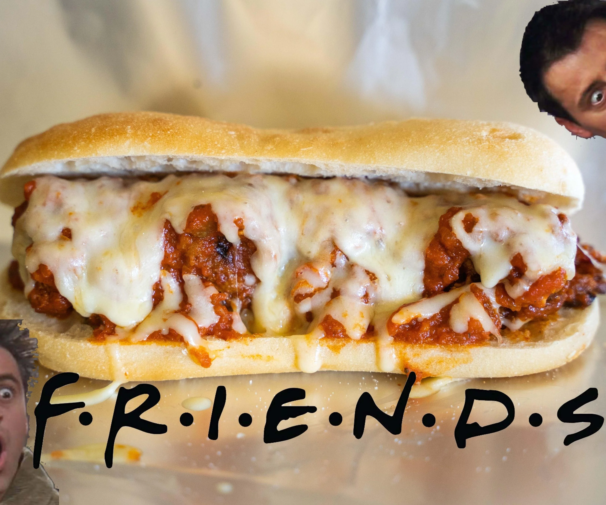
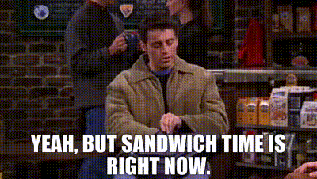

Sanduíche do Joey (friends)

Ingredientes
- Pão à sua escolha;
- Mostarda ou algum outro molho que preferir;
- 2 fatias de peito de peru defumado;
- Carne enlatada; e
- 2 fatias de pastrami.
Modo de preparo
 Corte o pão em duas fatias;
Passe a mostrada ou outro molho que escolher nos lados;
Adicione as fatias de pastrami, a carne enlatada e as fatias de peru defumado; e
Feche o lanche com outra fatia de pão e prontinho!